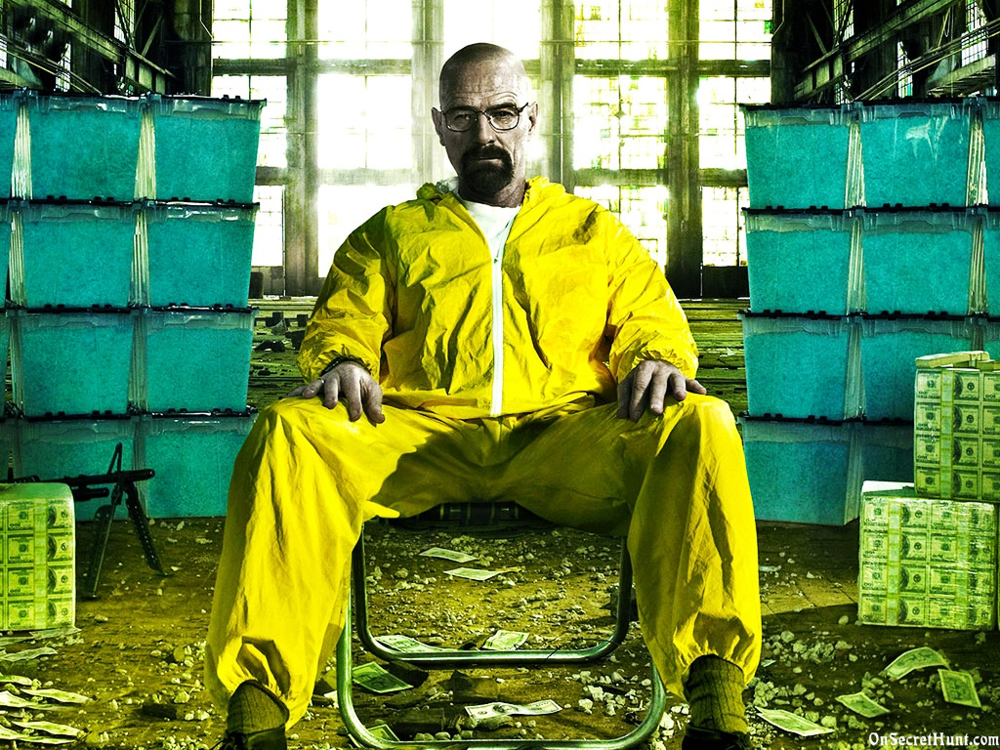

Using Git for the First Time
1/3/15
What Git Is and What It's Not
To get started, you need to understand a few things. Git is version control. Git is the most popular form of version control, because it is awesome. Git is not the same as GitHub. GitHub is git, but git is not GitHub.
Version Control
Let's go through those one by one! First, what is version control?
Version control, according to a google search, is "the task of keeping a software system consisting of many versions and configurations well organized". Why is version control so important? Because coding gets complicated. Every single character that is entered in your code will make a difference to the outcome of your project. What happens when you leave a project for a few days, then return to that project and accidentally forget to add an end parenthesis or, god forbid, a semi-colon? Everything will blow up.

Without version control, you might have no idea what changes you made since your last update. Version control allows you to see those changes and control them in an effective way.
All About git
Git is a version control system for software development. It is the most widely used system of version control!
Let's take the previous scenario one step further. Why is git the most popular version control method? With git not only can you see what changes you made, you can actually revert back to that working version you had from last Monday! It's pretty nifty.
The previous example is with just one developer, working on one project. Now imagine for me a team of developers working on a huge multi-million dollar product. They are going to need a way for everyone to work on the same code, at the same time, constantly, without breaking the product every other day!
This is where git saves the day again. git allows you to create these things called branches. The best explanation I have heard to explain how branches work, is by comparing a project in git to a parallel universe. Imagine your life, as it is now, as a master branch. It is a nice, solid line, travelling from your birth to present day. Now imagine we could make an infinite number of branches from your life as it is now, to how it could be in 10 years. Maybe in one branch you become a chemistry teacher who discovers he has cancer and turns to a life of crime and drug dealing to help his family before he dies.
In another, you become the first person to step on to Mars, but then are tragically left on the planet by your devoted crew after a freak storm throws a satellite piece through your spacesuit and they assume you are left for dead.
In another life, you become a git master and understand everything there is to know about version control.
You can see how each of your different life scenarios has played out. Now, imagine you can pick just one of these scenarios and integrate that to your master branch, to your actual life. That is a lot like git! You can play out these different scenarios, before you commit them to your master branch, your final product.
Now, imagine you pick one of the scenarios, but a few weeks in to living your new life, you decide it's actually not for you. With git, you can now revert back to a previous point in your life. In git, when you commit a new branch (it's a lot like saving your work, and adding details of what has been saved since the last update), you are creating a sort of checkpoint. You can revert back to this checkpoint at any time. So, for example, you could go back those ten years + a few weeks to your life exactly as it is today, before you were stranded on Mars, and select a better path, like becoming a git master!
If none of these crazy analogies are working for you, try taking a look at this diagram from www.atlassian.com. Circles represent a commit, aka a save/checkpoint, for each branch. On top you see the master branch. The commits for this master branch also list the version number, as it's the main branch representing actual releases of an updated product. Below the master branch, you see various branchs (like alternate realities!) that are periodically merged with the master branch or each other as the team decides the work can be integrated.

Git vs. GitHub
By this point, hopefully you have a better idea of what version control is, how it is related to git, and why it is important. So, finally, we get to the difference between git and GitHub.
Rectangles are squares, but squares are not rectangles. That is a lot like git and GitHub! GitHub is a community of git practitioners. GitHub provides a place for everyone who utilizes git to share their information publically, with a select group of peers, or not at all. GitHub stores things online. GitHub is amazing!
Git is a widely used version control system. Git utilizes the command line, a powerful but somewhat more difficult way to view your code history. GitHub is a git hosting service, which utilizes a graphical user interface to display your code's version history. It's beautiful, easy to use, and all around great.
If you're still not sure what GitHub is, check out this TechCrunch article going in to further detail about GitHub and all it's usefulness.
The Best Learning is Doing
Now go out and try it yourself! There are plenty of online tutorials introducing people to the basics of how to get started on git and GitHub.
I personally recommend this website. It is very basic and a great way to get through those tough first steps. Thanks for reading, and happy coding!